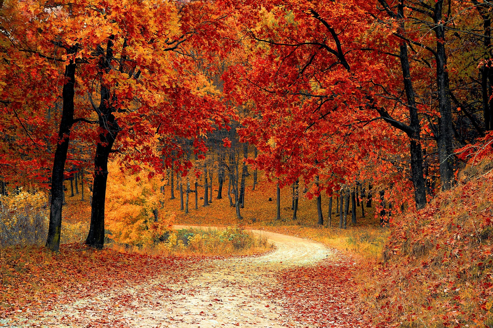

JPG Format Example

About This Image
This image shows a Fall landscape of a trail surrounded by trees with leaves fallen all on the ground. On the trees is a display of mostly orange and red leaves.
Why JPG Format?
JPG format works for this image because it has so many colors that blend nicely with each other. It also handled being scaled down very well keeping its stunning look.
Image source: Pixabay